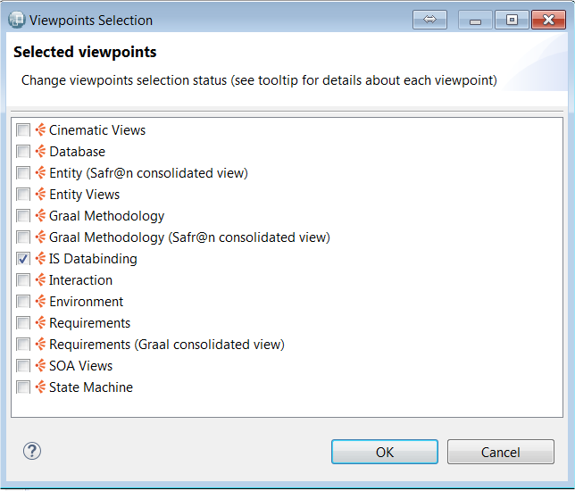
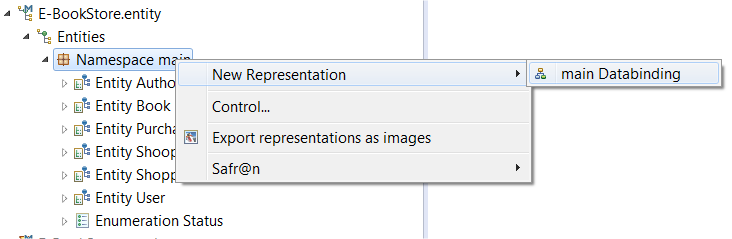
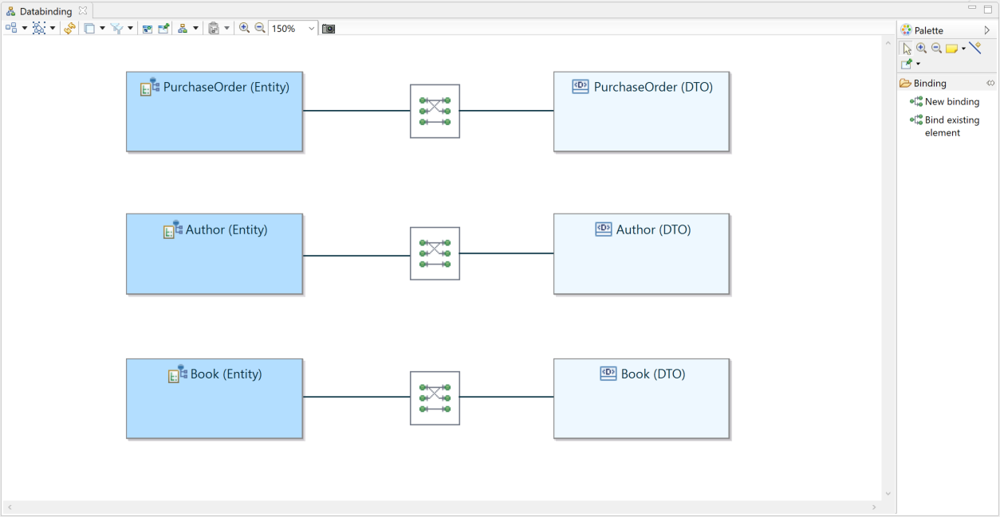

Copyright © 2008, 2024 Obeo - All rights reserved. This program and the accompanying materials are made available under the terms of the Eclipse Public License v2.0
L’outillage de databinding permet de modéliser le databinding entre types structurés (
Entity,
DTO ou
Domain class).
L’objectif classique est de spécifier la façon dont des structures de données vont être transformées pour convertir par exemple une
Entity en
DTO.
Cet outillage peut également permettre d'éditer le databinding des vues
ViewContainer et
ViewElement avec les types structurés.
Mais il est recommandé d’utiliser la vue
View Container Mockup pour éditer le databinding dans ce dernier cas.
En effet, la manière dont cet éditeur modifie le modèle n’est pas identique à la manière dont l'édition depuis la vue Mockup modifie le modèle:
Dans le Binding Editor (détaillé plus bas) une seule
BindingInfo est modifiée alors que depuis la vue Mockup une
BindingInfo peut être créée pour chaque
ViewContainer.
Une évolution de l'éditeur est nécessaire afin d’avoir le même comportement.
L’outillage de databinding embarque un point vue fournissant :
Pour activer le point de vue IS Databinding, sur une session Viewpoint ouverte, lancer le menu
Viewpoint Selection
Choisir le point de vue IS Databinding.

Le
Databinding Diagram permet de créer un
Binding entre deux types structurés (
Entity,
DTO ou
Domain class). Cet objet peut ensuite être édité en détail en lançant l'éditeur spécifique
Binding editor par un double-clic sur l'élément.
Ce diagramme peut être créé sur un package (
Namespace).

Le diagramme peut également être créé sur un ViewContainer n’ayant pas comme parent un autre ViewContainer.

Les éléments suivants sont affichés sur le diagramme :
Les outils fournis par la palette sont :
| Création d’un Binding entre deux éléments. Un assistant permet de sélectionner un premier type structuré parmi ceux contenus par le package, puis de sélectionner un deuxième type structuré dans toute la session de travail. | |
|
|
Création d’un Binding entre un type structuré déjà affiché sur le diagramme et un deuxième type structuré. Un assistant permet de sélectionner ce deuxième type structuré dans toute la session de travail. |
Un comportement similaire s’applique également lorsqu’il s’agit d’un ViewContainer et d’un type structuré.
Il est possible de naviguer depuis ce diagramme vers l'éditeur de binding :
Le Binding editor est un éditeur spécifique permettant décrire en détail le databinding entre deux types structurés (ou un ViewContainer et un type structuré). Le moyen le plus simple pour l’ouvrir est de double-cliquer sur le Binding voulu sur le diagramme décrit au chapitre précédent.

L'éditeur est divisé en différentes parties :

Cette vue présente les attributs et les références du type structuré.
Dans le cas des références, il est possible de déplier la référence pour avoir accès aux attributs et références du type référencé.
A partir de cette vue, il est possible de sélectionner un attribut ou une référence et de la faire glisser jusqu'à la vue opposée sur un attribut ou une référence. Un lien est alors créé entre les deux éléments.
Lorsqu’un ou des éléments sont sélectionnés, les liens les concernant sont affichés de façon plus visible sur la zone centrale.

La zone centrale permet de visualiser les liens entre éléments.
Il est possible de sélectionner un ou plusieurs liens pour les rendre plus visibles. La sélection multiple se fait en maintenant la touche Ctrl enfoncée.
Lorsqu’un lien est sélectionné, les éléments liés sont mis en surbrillance et le contenu de la zone inférieure est mis à jour.
Quand des liens sont sélectionnées, un appui sur la touche Del permet de les supprimer après un message de confirmation.

La zone inférieure affiche des champs de saisie en fonction des liens sélectionnés :
Les champs de saisie permettent de saisir des expressions utilisées pour décrire comment les données sont converties. Le texte saisi n’est pas interprété, c’est à l’utilisateur de choisir le pseudo-langage qui lui convient le mieux.
La zone inférieure peut être réduite ou agrandie en hauteur en sélectionnant la limite de la zone centrale juste au dessus du bouton Auto bind !.
Le bouton Auto bind ! permet de créer automatiquement des liens entre les éléments à gauche et à droite nommés de la même façon.